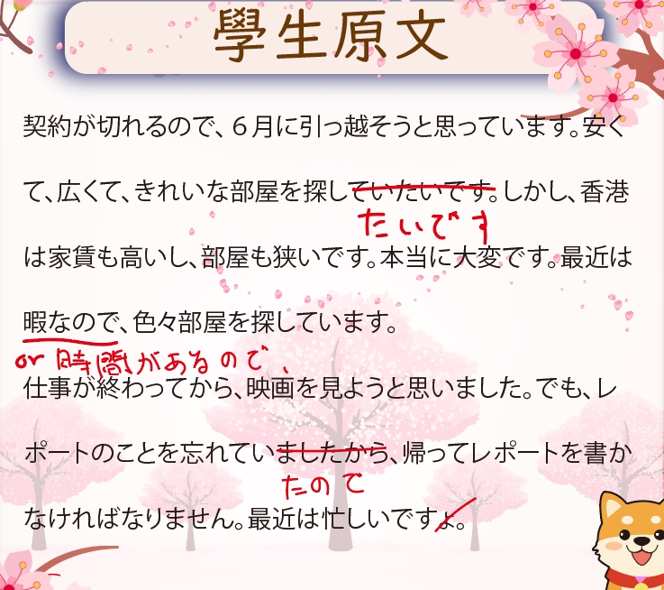
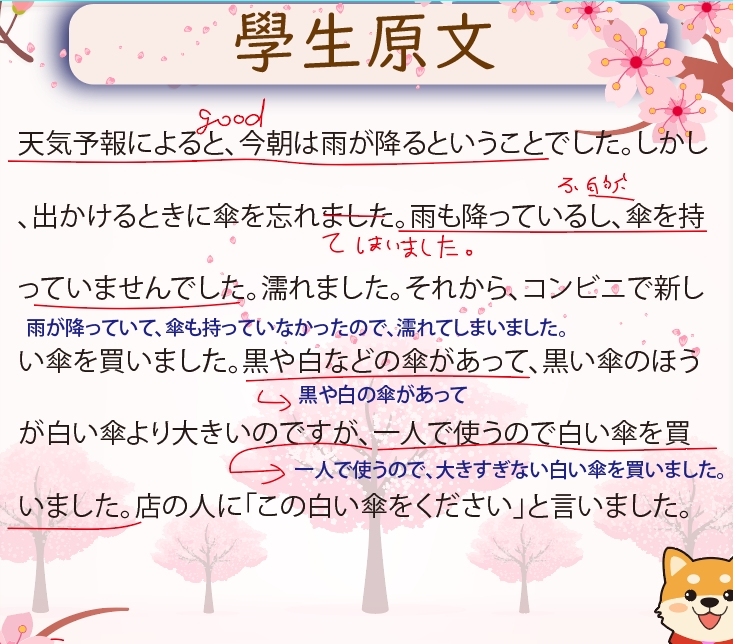
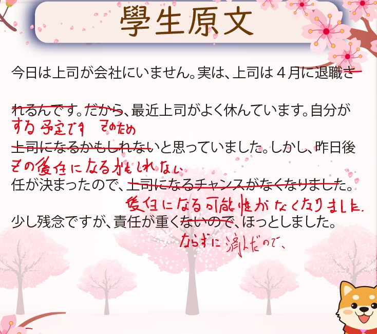
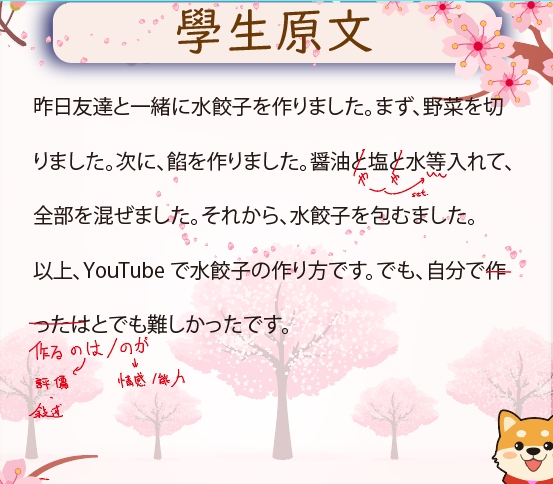
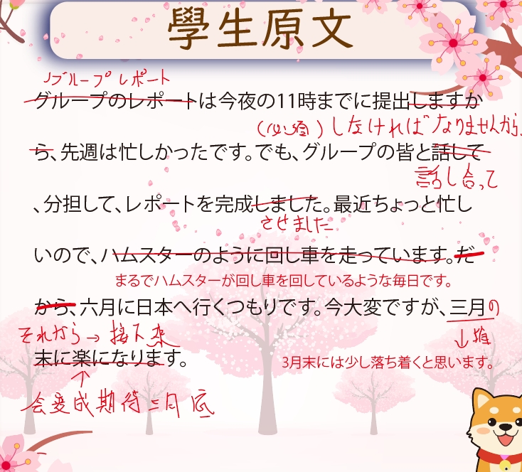
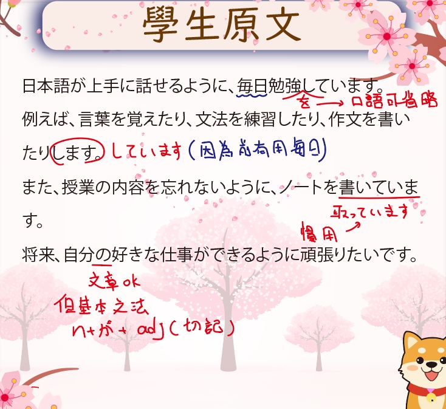

TEACHING PHILOSOPHY
我會直接幫你看句子卡在哪，是文法、中文思考，還是語感還沒校正到位。
這一頁不是給每個人看的。比較適合已經學過一段時間、但總覺得自己的日文「哪裡怪怪的」的人。
如果你剛好就是這一型，網站下面的學生案例和課程介紹，會比一般「課程價目表」更適合你看。
先讓我看你一小段日文，我會先幫你判斷：你是文法還沒穩、中文思考影響太大，還是其實只差最後的語感修正。
先看我適不適合你
曾在日本留學，深刻體會到「在日本生活的日文」和「教科書的日文」之間的差距。
所以我的課不只教你「正確答案」，更會教你「哪裡不自然、為什麼怪、怎麼改才像日本人在用的日文」。台式日文怎麼修正、語感怎麼培養——這才是重點。
教學核心：讓每個學生在課堂上「真的用出來」，而不只是「聽懂」。每週複習作業不是交差，而是幫你把學過的內容留住。
授課方式
一週建議兩堂 · 每堂 1.5～2 小時
前半段回顧 · 後半段新內容 · 課後複習作業
適合初級，或學過文法卻還是常覺得句子怪怪的人。重點不是背更多，而是把不自然的地方修成真的能用的日文。
適合考試總是差一點的人。把常錯文法、閱讀判斷和語感問題拉出來，集中補強。
適合自己念得下去、但不知道怎麼排進度的人。幫你安排節奏、回顧、輸出與檢討，不再一個人亂學。
很多人不是不會，而是沒有人告訴他：哪裡其實還是中文邏輯、哪裡聽起來不像日文。這些都是課堂上真實發生的修正案例。

上課兩個月・從零開始・已能自由表達

上課兩個月・從零開始・已能自由表達

轉班生・正在矯正思考方式・目標是考上N1

轉班生・觀念糾正・減少錯誤，目標七月的N2

觀念慢慢導正・減少錯誤・目標年底N3

上課一個多月・從零開始・已能自由表達
你可以直接貼一句、短文、作文或最近卡住的句子。我會先幫你看：是文法問題、中文思考影響，還是表達方式還沒自然。